Environmental Issues, Anthropogenic Pressures & Pollution
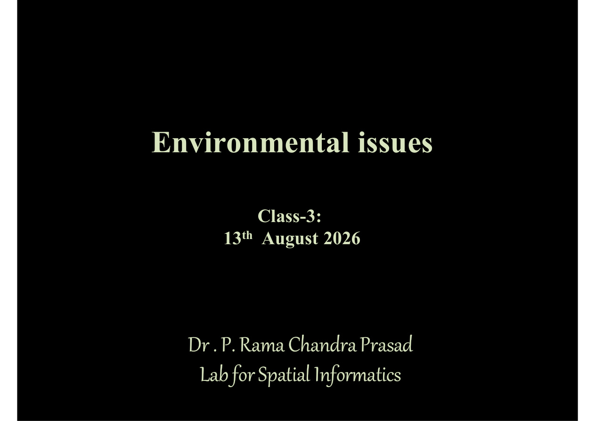
Environmental issues
- •Environmental issues Dr . P. Rama Chandra Prasad Lab for Spatial Informatics Class-3:
This slide presents essential concepts in Lecture 03: Environmental issues. Specifically, it examines Environmental issues Dr . P. Rama Chandra Prasad Lab for Spatial Informatics Class-3:. In the broader context of Aquatic and terrestrial environmental issues: cultural eutrophication, ocean dead zones, Gulf of Mexico oil spill (Deepwater Horizon), Niger delta pollution, thermal pollution (Chaohu Lake), acid rain, desertification, Kubuqi greening model, shifting cultivation (Jhum), landfill leachate, biomagnification vs bioaccumulation, and Antarctic ozone depletion., mastering this material is critical for analyzing ecological tradeoffs, regulatory frameworks, and exam questions on environmental system dynamics.
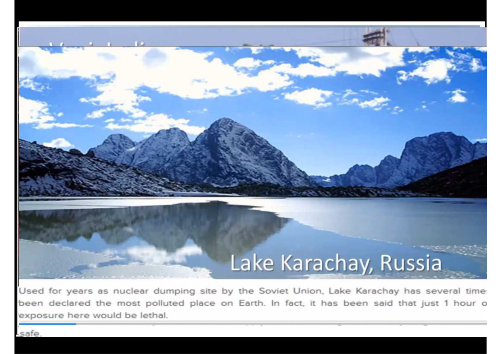
Slide 2
Visual figure / diagram presentation slide. Review the high-resolution render on the left.
This visual slide in Lecture 03 illustrates core structural mechanisms and empirical data for Slide 2. It provides essential visual context within the curriculum of Aquatic and terrestrial environmental issues: cultural eutrophication, ocean dead zones, Gulf of Mexico oil spill (Deepwater Horizon), Niger delta pollution, thermal pollution (Chaohu Lake), acid rain, desertification, Kubuqi greening model, shifting cultivation (Jhum), landfill leachate, biomagnification vs bioaccumulation, and Antarctic ozone depletion., directly connecting theoretical principles with real-world environmental technology observations.
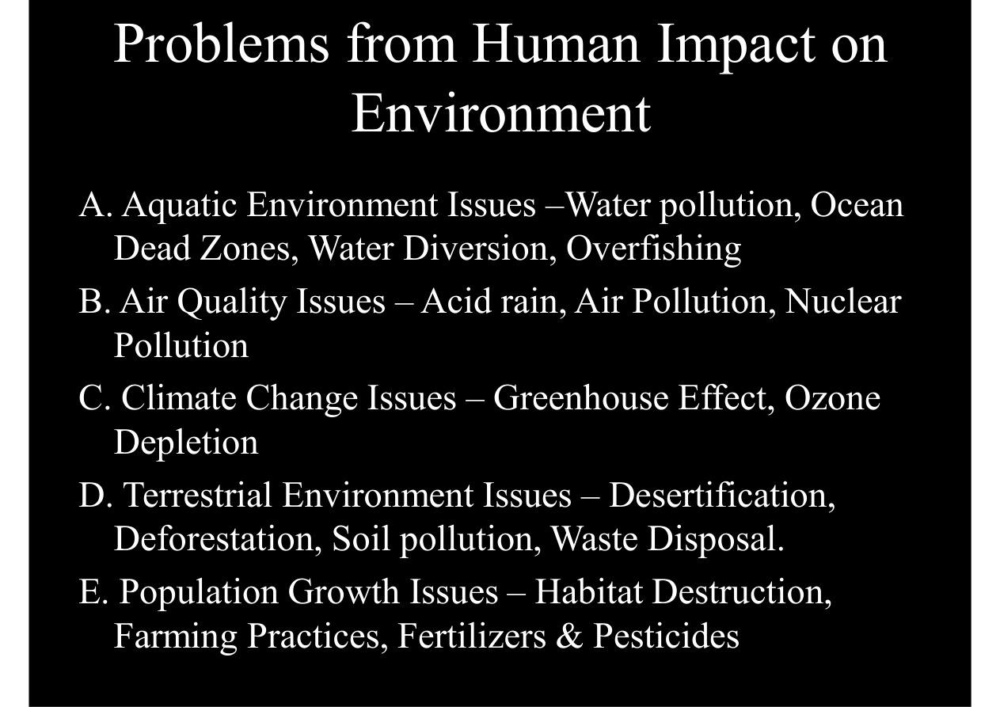
Problems from Human Impact on
- •Problems from Human Impact on Environment A. Aquatic Environment Issues –Water pollution, Ocean Dead Zones, Water Diversion, Overfishing
This slide presents essential concepts in Lecture 03: Problems from Human Impact on. Specifically, it examines Problems from Human Impact on Environment A. Aquatic Environment Issues –Water pollution, Ocean Dead Zones, Water Diversion, Overfishing. In the broader context of Aquatic and terrestrial environmental issues: cultural eutrophication, ocean dead zones, Gulf of Mexico oil spill (Deepwater Horizon), Niger delta pollution, thermal pollution (Chaohu Lake), acid rain, desertification, Kubuqi greening model, shifting cultivation (Jhum), landfill leachate, biomagnification vs bioaccumulation, and Antarctic ozone depletion., mastering this material is critical for analyzing ecological tradeoffs, regulatory frameworks, and exam questions on environmental system dynamics.
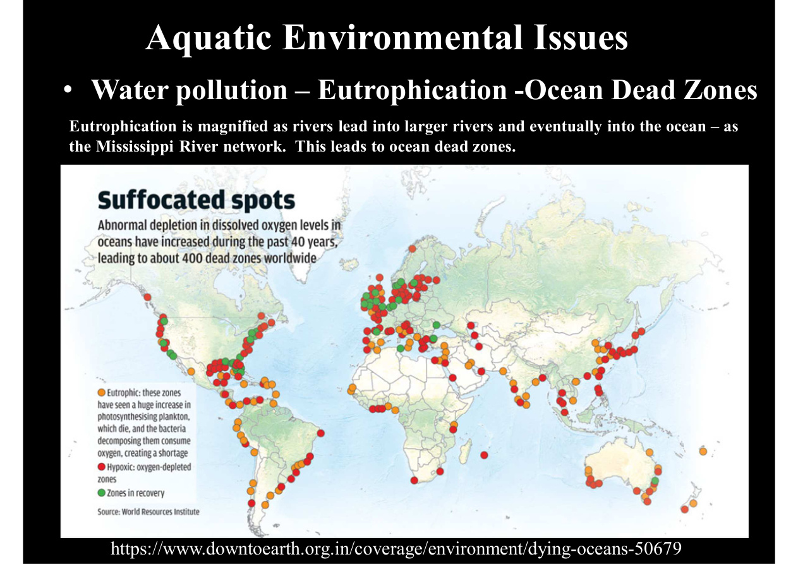
• Water pollution – Eutrophication -Ocean Dead Zones
- •• Water pollution – Eutrophication -Ocean Dead Zones Aquatic Environmental Issues Eutrophication is magnified as rivers lead into larger rivers and eventually into the ocean – as the Mississippi River network. This leads to ocean dead zones.
This slide presents essential concepts in Lecture 03: • Water pollution – Eutrophication -Ocean Dead Zones. Specifically, it examines • Water pollution – Eutrophication -Ocean Dead Zones Aquatic Environmental Issues Eutrophication is magnified as rivers lead into larger rivers and eventually into the ocean – as the Mississippi River network. This leads to ocean dead zones.. In the broader context of Aquatic and terrestrial environmental issues: cultural eutrophication, ocean dead zones, Gulf of Mexico oil spill (Deepwater Horizon), Niger delta pollution, thermal pollution (Chaohu Lake), acid rain, desertification, Kubuqi greening model, shifting cultivation (Jhum), landfill leachate, biomagnification vs bioaccumulation, and Antarctic ozone depletion., mastering this material is critical for analyzing ecological tradeoffs, regulatory frameworks, and exam questions on environmental system dynamics.
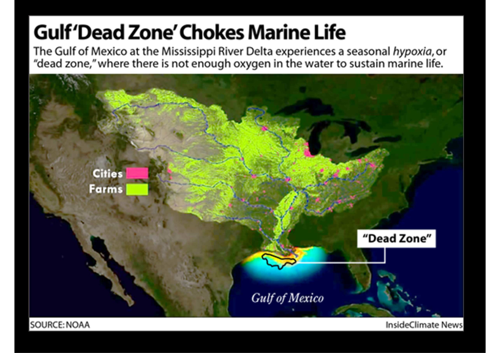
Slide 5
Visual figure / diagram presentation slide. Review the high-resolution render on the left.
This visual slide in Lecture 03 illustrates core structural mechanisms and empirical data for Slide 5. It provides essential visual context within the curriculum of Aquatic and terrestrial environmental issues: cultural eutrophication, ocean dead zones, Gulf of Mexico oil spill (Deepwater Horizon), Niger delta pollution, thermal pollution (Chaohu Lake), acid rain, desertification, Kubuqi greening model, shifting cultivation (Jhum), landfill leachate, biomagnification vs bioaccumulation, and Antarctic ozone depletion., directly connecting theoretical principles with real-world environmental technology observations.
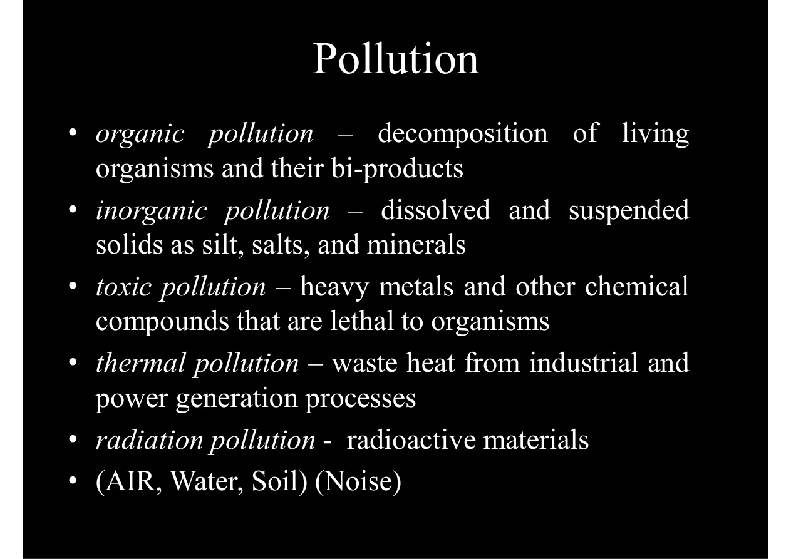
Pollution
- •Pollution • organic pollution decomposition
This slide presents essential concepts in Lecture 03: Pollution. Specifically, it examines Pollution • organic pollution decomposition. In the broader context of Aquatic and terrestrial environmental issues: cultural eutrophication, ocean dead zones, Gulf of Mexico oil spill (Deepwater Horizon), Niger delta pollution, thermal pollution (Chaohu Lake), acid rain, desertification, Kubuqi greening model, shifting cultivation (Jhum), landfill leachate, biomagnification vs bioaccumulation, and Antarctic ozone depletion., mastering this material is critical for analyzing ecological tradeoffs, regulatory frameworks, and exam questions on environmental system dynamics.
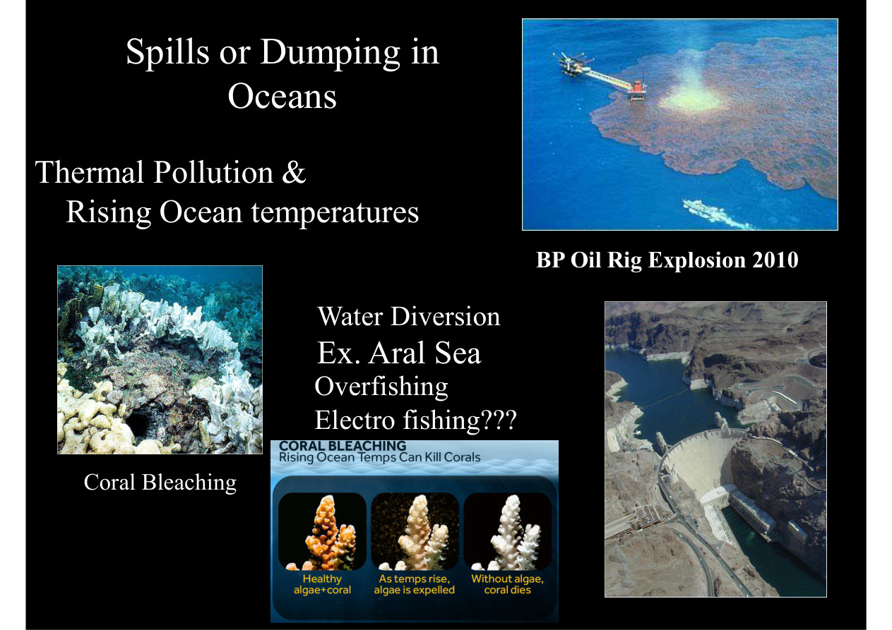
Spills or Dumping in
- •Spills or Dumping in Oceans Thermal Pollution & Rising Ocean temperatures
This slide presents essential concepts in Lecture 03: Spills or Dumping in. Specifically, it examines Spills or Dumping in Oceans Thermal Pollution & Rising Ocean temperatures. In the broader context of Aquatic and terrestrial environmental issues: cultural eutrophication, ocean dead zones, Gulf of Mexico oil spill (Deepwater Horizon), Niger delta pollution, thermal pollution (Chaohu Lake), acid rain, desertification, Kubuqi greening model, shifting cultivation (Jhum), landfill leachate, biomagnification vs bioaccumulation, and Antarctic ozone depletion., mastering this material is critical for analyzing ecological tradeoffs, regulatory frameworks, and exam questions on environmental system dynamics.
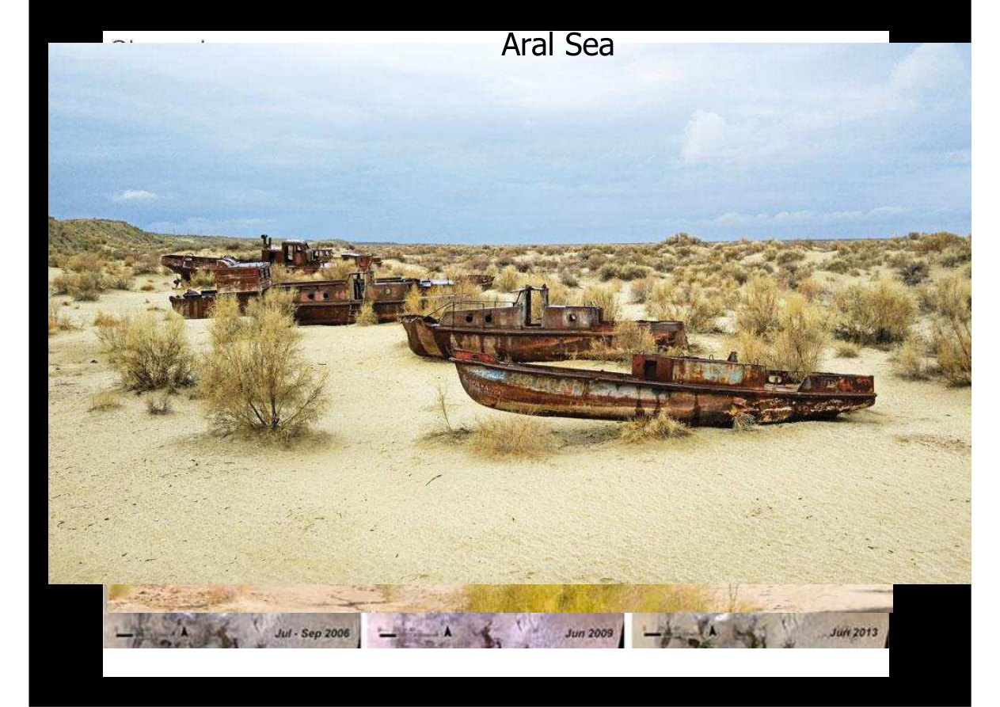
Aral Sea
- •Aral Sea
This visual slide in Lecture 03 illustrates core structural mechanisms and empirical data for Aral Sea. It provides essential visual context within the curriculum of Aquatic and terrestrial environmental issues: cultural eutrophication, ocean dead zones, Gulf of Mexico oil spill (Deepwater Horizon), Niger delta pollution, thermal pollution (Chaohu Lake), acid rain, desertification, Kubuqi greening model, shifting cultivation (Jhum), landfill leachate, biomagnification vs bioaccumulation, and Antarctic ozone depletion., directly connecting theoretical principles with real-world environmental technology observations.
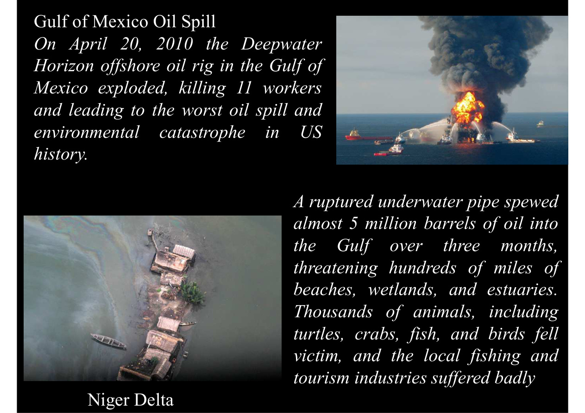
Gulf of Mexico Oil Spill
- •Gulf of Mexico Oil Spill On April 20, 2010 the Deepwater Horizon offshore oil rig in the Gulf of Mexico exploded, killing 11 workers
This slide presents essential concepts in Lecture 03: Gulf of Mexico Oil Spill. Specifically, it examines Gulf of Mexico Oil Spill On April 20, 2010 the Deepwater Horizon offshore oil rig in the Gulf of Mexico exploded, killing 11 workers. In the broader context of Aquatic and terrestrial environmental issues: cultural eutrophication, ocean dead zones, Gulf of Mexico oil spill (Deepwater Horizon), Niger delta pollution, thermal pollution (Chaohu Lake), acid rain, desertification, Kubuqi greening model, shifting cultivation (Jhum), landfill leachate, biomagnification vs bioaccumulation, and Antarctic ozone depletion., mastering this material is critical for analyzing ecological tradeoffs, regulatory frameworks, and exam questions on environmental system dynamics.
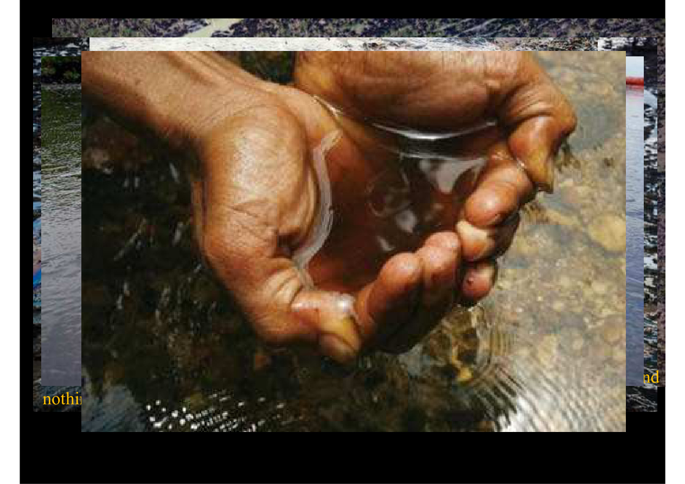
A bird’s eye view of the impact of oil pollution in the Niger ...
- •A bird’s eye view of the impact of oil pollution in the Niger delta creeks. Woman search the oily creek for fish, edible snails, or kindling – but they find nothing they can use. Everything is coated in oil
This slide presents essential concepts in Lecture 03: A bird’s eye view of the impact of oil pollution in the Niger .... Specifically, it examines A bird’s eye view of the impact of oil pollution in the Niger delta creeks. Woman search the oily creek for fish, edible snails, or kindling – but they find nothing they can use. Everything is coated in oil. In the broader context of Aquatic and terrestrial environmental issues: cultural eutrophication, ocean dead zones, Gulf of Mexico oil spill (Deepwater Horizon), Niger delta pollution, thermal pollution (Chaohu Lake), acid rain, desertification, Kubuqi greening model, shifting cultivation (Jhum), landfill leachate, biomagnification vs bioaccumulation, and Antarctic ozone depletion., mastering this material is critical for analyzing ecological tradeoffs, regulatory frameworks, and exam questions on environmental system dynamics.
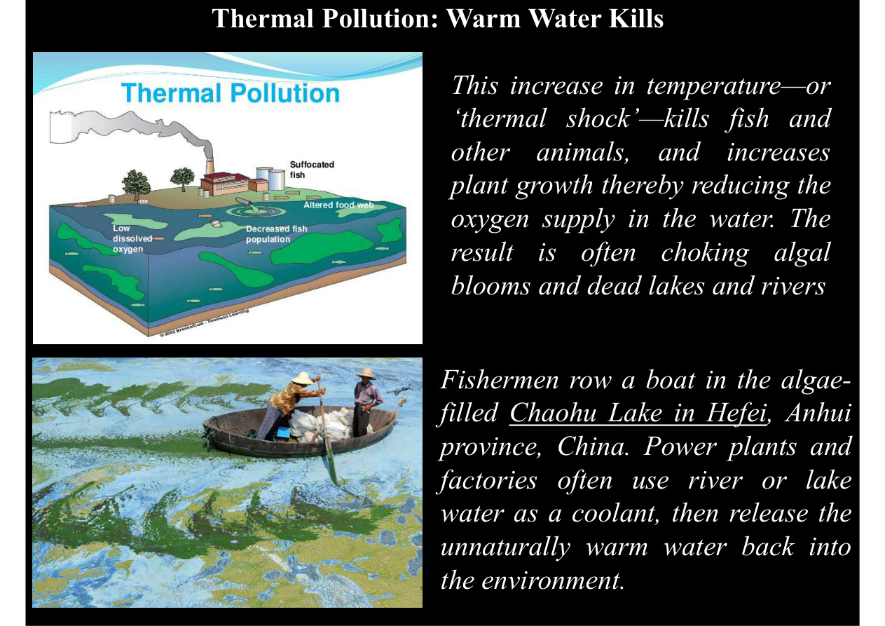
Thermal Pollution: Warm Water Kills
- •Thermal Pollution: Warm Water Kills Fishermen row a boat in the algae- filled Chaohu Lake in Hefei, Anhui province, China. Power plants and
This slide presents essential concepts in Lecture 03: Thermal Pollution: Warm Water Kills. Specifically, it examines Thermal Pollution: Warm Water Kills Fishermen row a boat in the algae- filled Chaohu Lake in Hefei, Anhui province, China. Power plants and. In the broader context of Aquatic and terrestrial environmental issues: cultural eutrophication, ocean dead zones, Gulf of Mexico oil spill (Deepwater Horizon), Niger delta pollution, thermal pollution (Chaohu Lake), acid rain, desertification, Kubuqi greening model, shifting cultivation (Jhum), landfill leachate, biomagnification vs bioaccumulation, and Antarctic ozone depletion., mastering this material is critical for analyzing ecological tradeoffs, regulatory frameworks, and exam questions on environmental system dynamics.
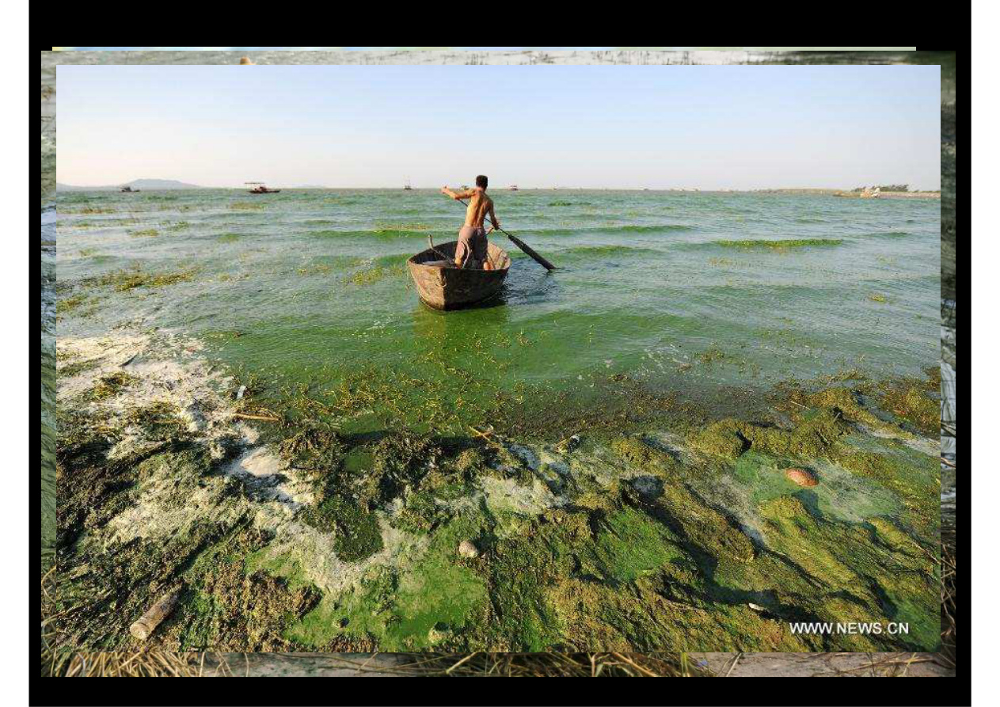
Slide 12
Visual figure / diagram presentation slide. Review the high-resolution render on the left.
This visual slide in Lecture 03 illustrates core structural mechanisms and empirical data for Slide 12. It provides essential visual context within the curriculum of Aquatic and terrestrial environmental issues: cultural eutrophication, ocean dead zones, Gulf of Mexico oil spill (Deepwater Horizon), Niger delta pollution, thermal pollution (Chaohu Lake), acid rain, desertification, Kubuqi greening model, shifting cultivation (Jhum), landfill leachate, biomagnification vs bioaccumulation, and Antarctic ozone depletion., directly connecting theoretical principles with real-world environmental technology observations.
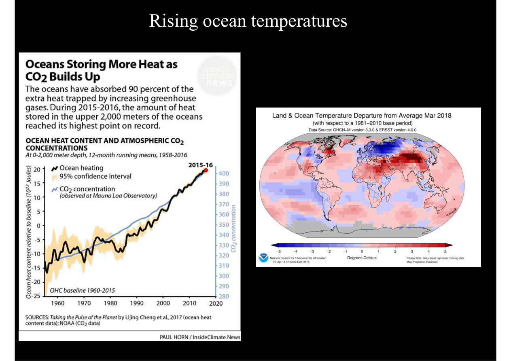
Rising ocean temperatures
- •Rising ocean temperatures
This slide presents essential concepts in Lecture 03: Rising ocean temperatures. Specifically, it examines Rising ocean temperatures. In the broader context of Aquatic and terrestrial environmental issues: cultural eutrophication, ocean dead zones, Gulf of Mexico oil spill (Deepwater Horizon), Niger delta pollution, thermal pollution (Chaohu Lake), acid rain, desertification, Kubuqi greening model, shifting cultivation (Jhum), landfill leachate, biomagnification vs bioaccumulation, and Antarctic ozone depletion., mastering this material is critical for analyzing ecological tradeoffs, regulatory frameworks, and exam questions on environmental system dynamics.
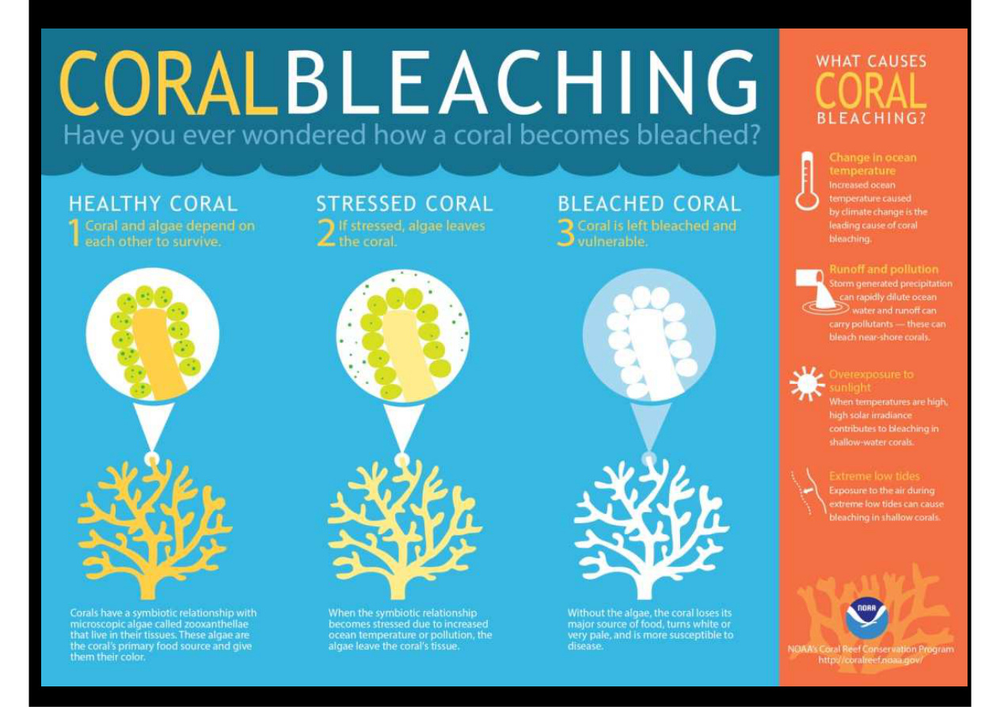
Slide 14
Visual figure / diagram presentation slide. Review the high-resolution render on the left.
This visual slide in Lecture 03 illustrates core structural mechanisms and empirical data for Slide 14. It provides essential visual context within the curriculum of Aquatic and terrestrial environmental issues: cultural eutrophication, ocean dead zones, Gulf of Mexico oil spill (Deepwater Horizon), Niger delta pollution, thermal pollution (Chaohu Lake), acid rain, desertification, Kubuqi greening model, shifting cultivation (Jhum), landfill leachate, biomagnification vs bioaccumulation, and Antarctic ozone depletion., directly connecting theoretical principles with real-world environmental technology observations.
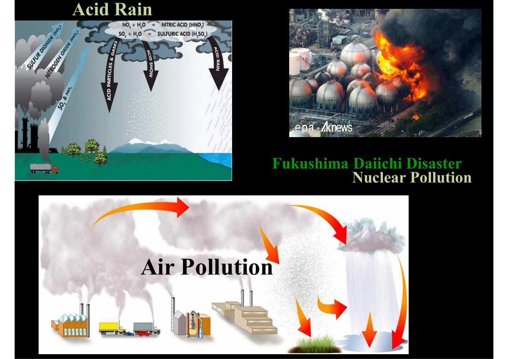
Acid Rain
- •Acid Rain Air Pollution Fukushima Daiichi Disaster Nuclear Pollution
This slide presents essential concepts in Lecture 03: Acid Rain. Specifically, it examines Acid Rain Air Pollution Fukushima Daiichi Disaster Nuclear Pollution. In the broader context of Aquatic and terrestrial environmental issues: cultural eutrophication, ocean dead zones, Gulf of Mexico oil spill (Deepwater Horizon), Niger delta pollution, thermal pollution (Chaohu Lake), acid rain, desertification, Kubuqi greening model, shifting cultivation (Jhum), landfill leachate, biomagnification vs bioaccumulation, and Antarctic ozone depletion., mastering this material is critical for analyzing ecological tradeoffs, regulatory frameworks, and exam questions on environmental system dynamics.
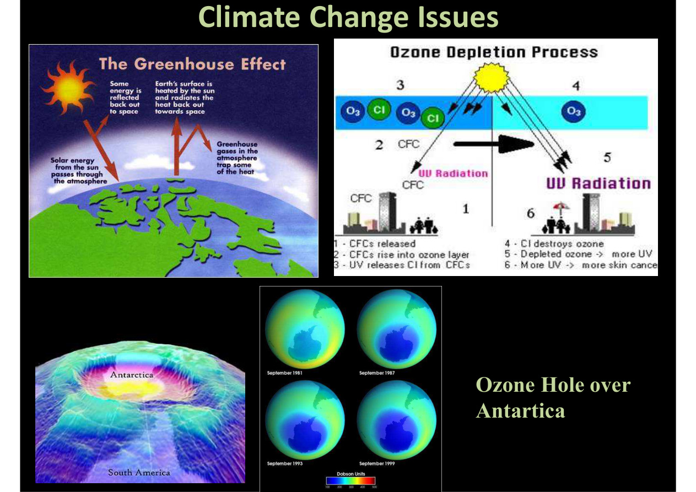
Climate Change Issues
- •Climate Change Issues Ozone Hole over Antartica
This slide presents essential concepts in Lecture 03: Climate Change Issues. Specifically, it examines Climate Change Issues Ozone Hole over Antartica. In the broader context of Aquatic and terrestrial environmental issues: cultural eutrophication, ocean dead zones, Gulf of Mexico oil spill (Deepwater Horizon), Niger delta pollution, thermal pollution (Chaohu Lake), acid rain, desertification, Kubuqi greening model, shifting cultivation (Jhum), landfill leachate, biomagnification vs bioaccumulation, and Antarctic ozone depletion., mastering this material is critical for analyzing ecological tradeoffs, regulatory frameworks, and exam questions on environmental system dynamics.
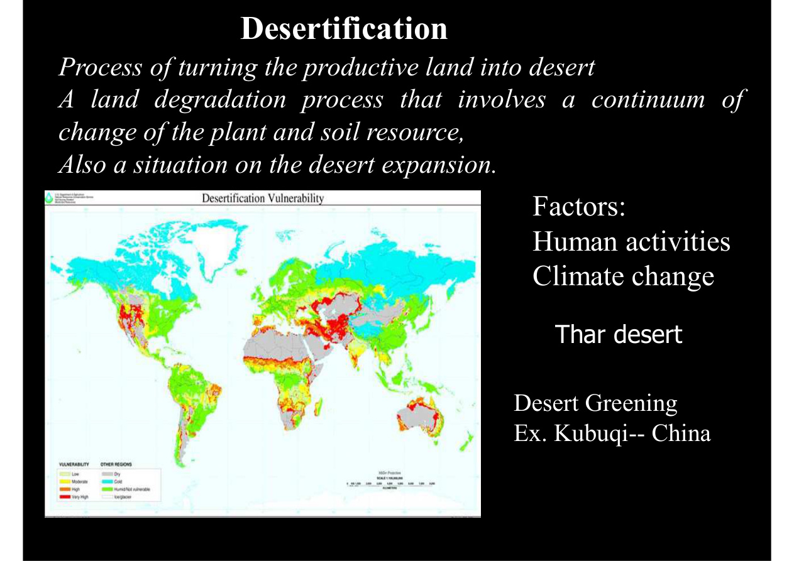
Desertification
- •Desertification Thar desert Process of turning the productive land into desert A land degradation process that involves a continuum of
This slide presents essential concepts in Lecture 03: Desertification. Specifically, it examines Desertification Thar desert Process of turning the productive land into desert A land degradation process that involves a continuum of. In the broader context of Aquatic and terrestrial environmental issues: cultural eutrophication, ocean dead zones, Gulf of Mexico oil spill (Deepwater Horizon), Niger delta pollution, thermal pollution (Chaohu Lake), acid rain, desertification, Kubuqi greening model, shifting cultivation (Jhum), landfill leachate, biomagnification vs bioaccumulation, and Antarctic ozone depletion., mastering this material is critical for analyzing ecological tradeoffs, regulatory frameworks, and exam questions on environmental system dynamics.
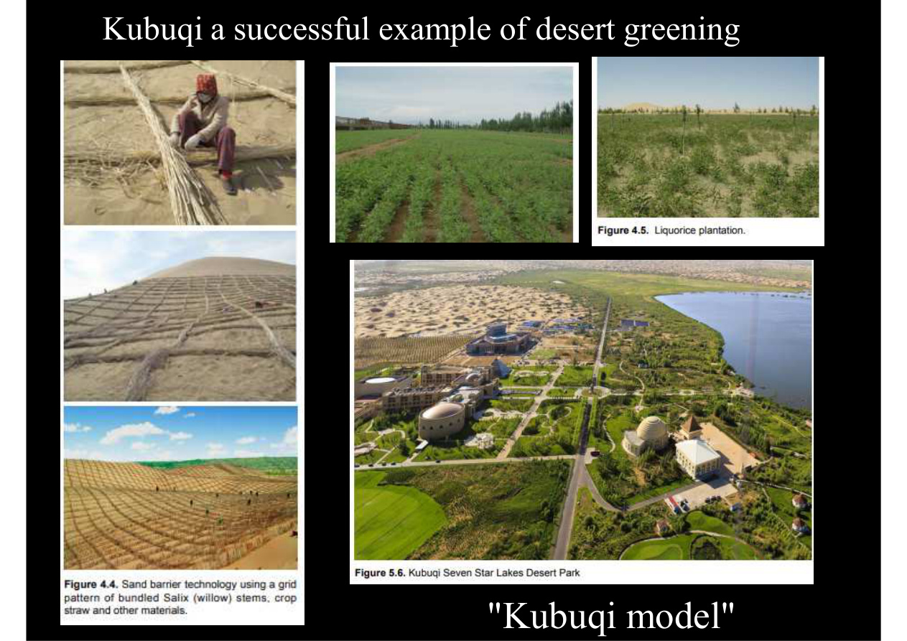
Kubuqi a successful example of desert greening
- •Kubuqi a successful example of desert greening "Kubuqi model"
This slide presents essential concepts in Lecture 03: Kubuqi a successful example of desert greening. Specifically, it examines Kubuqi a successful example of desert greening "Kubuqi model". In the broader context of Aquatic and terrestrial environmental issues: cultural eutrophication, ocean dead zones, Gulf of Mexico oil spill (Deepwater Horizon), Niger delta pollution, thermal pollution (Chaohu Lake), acid rain, desertification, Kubuqi greening model, shifting cultivation (Jhum), landfill leachate, biomagnification vs bioaccumulation, and Antarctic ozone depletion., mastering this material is critical for analyzing ecological tradeoffs, regulatory frameworks, and exam questions on environmental system dynamics.
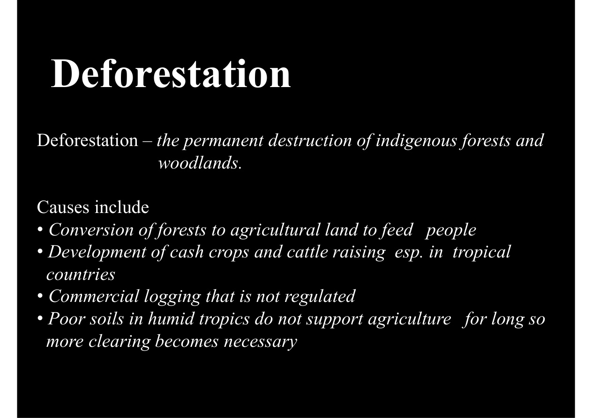
Deforestation
- •Deforestation Deforestation – the permanent destruction of indigenous forests and woodlands. Causes include
This slide presents essential concepts in Lecture 03: Deforestation. Specifically, it examines Deforestation Deforestation – the permanent destruction of indigenous forests and woodlands. Causes include. In the broader context of Aquatic and terrestrial environmental issues: cultural eutrophication, ocean dead zones, Gulf of Mexico oil spill (Deepwater Horizon), Niger delta pollution, thermal pollution (Chaohu Lake), acid rain, desertification, Kubuqi greening model, shifting cultivation (Jhum), landfill leachate, biomagnification vs bioaccumulation, and Antarctic ozone depletion., mastering this material is critical for analyzing ecological tradeoffs, regulatory frameworks, and exam questions on environmental system dynamics.
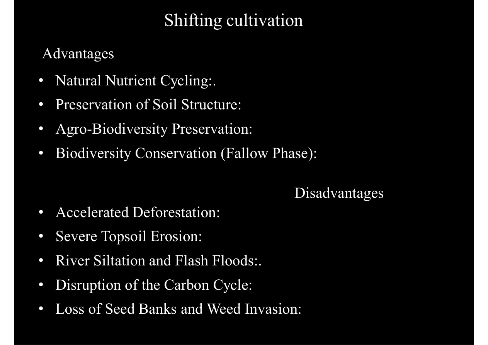
Shifting cultivation
- •Shifting cultivation Advantages • Natural Nutrient Cycling:. • Preservation of Soil Structure:
This slide presents essential concepts in Lecture 03: Shifting cultivation. Specifically, it examines Shifting cultivation Advantages • Natural Nutrient Cycling:. • Preservation of Soil Structure:. In the broader context of Aquatic and terrestrial environmental issues: cultural eutrophication, ocean dead zones, Gulf of Mexico oil spill (Deepwater Horizon), Niger delta pollution, thermal pollution (Chaohu Lake), acid rain, desertification, Kubuqi greening model, shifting cultivation (Jhum), landfill leachate, biomagnification vs bioaccumulation, and Antarctic ozone depletion., mastering this material is critical for analyzing ecological tradeoffs, regulatory frameworks, and exam questions on environmental system dynamics.
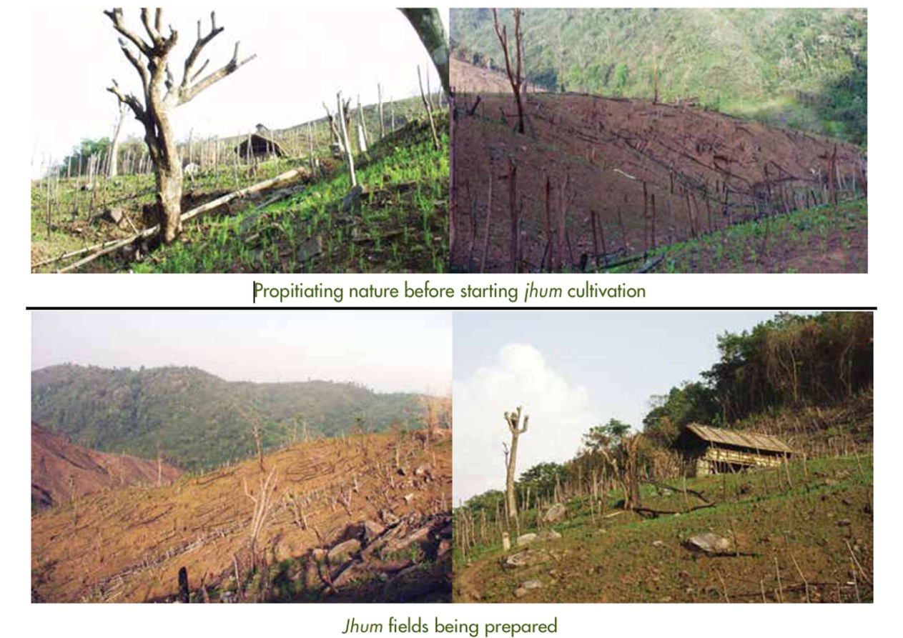
Slide 21
Visual figure / diagram presentation slide. Review the high-resolution render on the left.
This visual slide in Lecture 03 illustrates core structural mechanisms and empirical data for Slide 21. It provides essential visual context within the curriculum of Aquatic and terrestrial environmental issues: cultural eutrophication, ocean dead zones, Gulf of Mexico oil spill (Deepwater Horizon), Niger delta pollution, thermal pollution (Chaohu Lake), acid rain, desertification, Kubuqi greening model, shifting cultivation (Jhum), landfill leachate, biomagnification vs bioaccumulation, and Antarctic ozone depletion., directly connecting theoretical principles with real-world environmental technology observations.
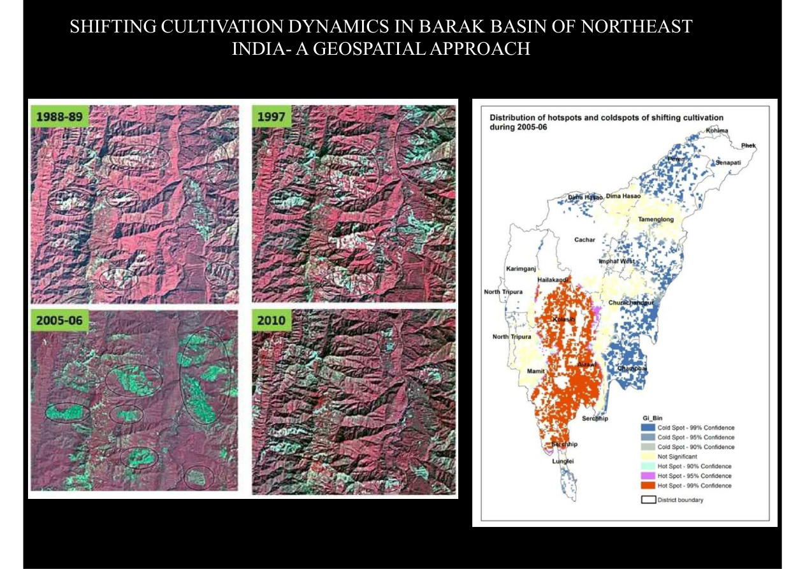
SHIFTING CULTIVATION DYNAMICS IN BARAK BASIN OF NORTHEAST
- •SHIFTING CULTIVATION DYNAMICS IN BARAK BASIN OF NORTHEAST INDIA- A GEOSPATIAL APPROACH
This slide presents essential concepts in Lecture 03: SHIFTING CULTIVATION DYNAMICS IN BARAK BASIN OF NORTHEAST. Specifically, it examines SHIFTING CULTIVATION DYNAMICS IN BARAK BASIN OF NORTHEAST INDIA- A GEOSPATIAL APPROACH. In the broader context of Aquatic and terrestrial environmental issues: cultural eutrophication, ocean dead zones, Gulf of Mexico oil spill (Deepwater Horizon), Niger delta pollution, thermal pollution (Chaohu Lake), acid rain, desertification, Kubuqi greening model, shifting cultivation (Jhum), landfill leachate, biomagnification vs bioaccumulation, and Antarctic ozone depletion., mastering this material is critical for analyzing ecological tradeoffs, regulatory frameworks, and exam questions on environmental system dynamics.
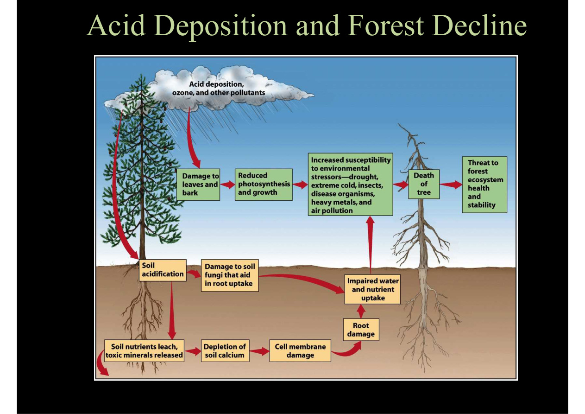
Acid Deposition and Forest Decline
- •Acid Deposition and Forest Decline
This slide presents essential concepts in Lecture 03: Acid Deposition and Forest Decline. Specifically, it examines Acid Deposition and Forest Decline. In the broader context of Aquatic and terrestrial environmental issues: cultural eutrophication, ocean dead zones, Gulf of Mexico oil spill (Deepwater Horizon), Niger delta pollution, thermal pollution (Chaohu Lake), acid rain, desertification, Kubuqi greening model, shifting cultivation (Jhum), landfill leachate, biomagnification vs bioaccumulation, and Antarctic ozone depletion., mastering this material is critical for analyzing ecological tradeoffs, regulatory frameworks, and exam questions on environmental system dynamics.
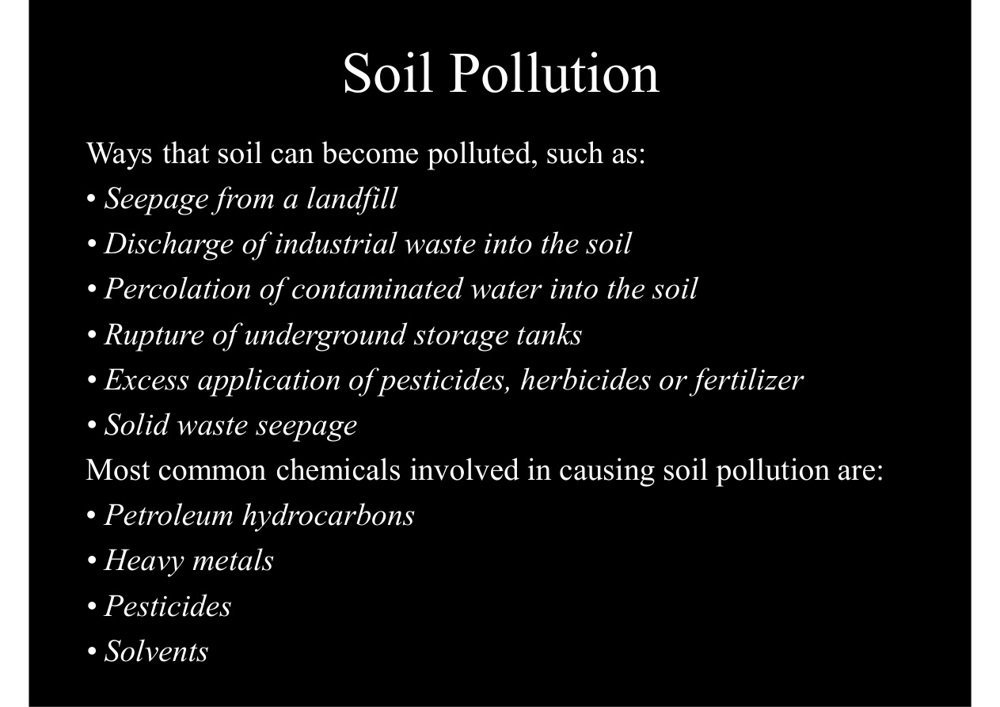
Soil Pollution
- •Soil Pollution Ways that soil can become polluted, such as: • Seepage from a landfill • Discharge of industrial waste into the soil
This slide presents essential concepts in Lecture 03: Soil Pollution. Specifically, it examines Soil Pollution Ways that soil can become polluted, such as: • Seepage from a landfill • Discharge of industrial waste into the soil. In the broader context of Aquatic and terrestrial environmental issues: cultural eutrophication, ocean dead zones, Gulf of Mexico oil spill (Deepwater Horizon), Niger delta pollution, thermal pollution (Chaohu Lake), acid rain, desertification, Kubuqi greening model, shifting cultivation (Jhum), landfill leachate, biomagnification vs bioaccumulation, and Antarctic ozone depletion., mastering this material is critical for analyzing ecological tradeoffs, regulatory frameworks, and exam questions on environmental system dynamics.
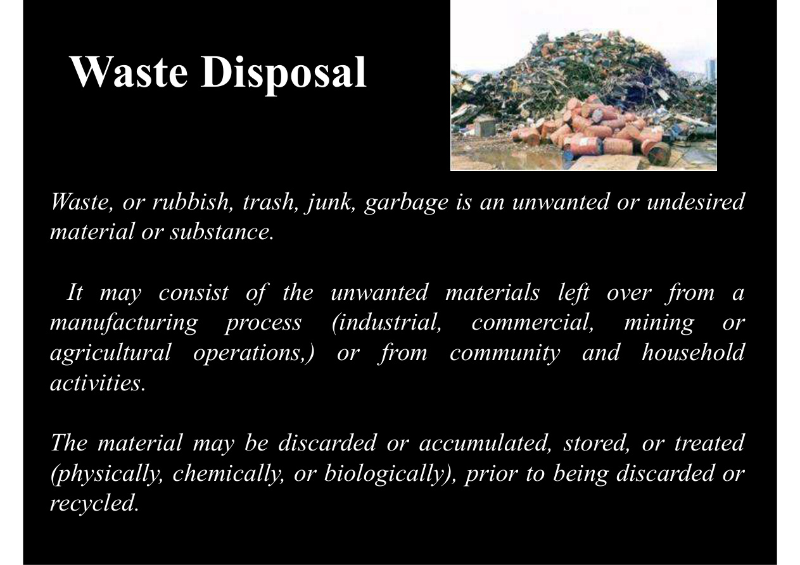
Waste Disposal
- •Waste Disposal Waste, or rubbish, trash, junk, garbage is an unwanted or undesired material or substance. It may consist of the unwanted materials left over from a
This slide presents essential concepts in Lecture 03: Waste Disposal. Specifically, it examines Waste Disposal Waste, or rubbish, trash, junk, garbage is an unwanted or undesired material or substance. It may consist of the unwanted materials left over from a. In the broader context of Aquatic and terrestrial environmental issues: cultural eutrophication, ocean dead zones, Gulf of Mexico oil spill (Deepwater Horizon), Niger delta pollution, thermal pollution (Chaohu Lake), acid rain, desertification, Kubuqi greening model, shifting cultivation (Jhum), landfill leachate, biomagnification vs bioaccumulation, and Antarctic ozone depletion., mastering this material is critical for analyzing ecological tradeoffs, regulatory frameworks, and exam questions on environmental system dynamics.
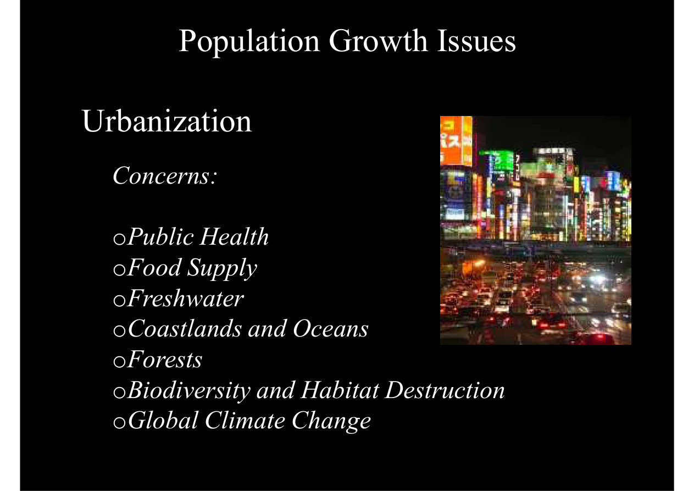
Urbanization
- •Urbanization Concerns: oPublic Health oFood Supply
This slide presents essential concepts in Lecture 03: Urbanization. Specifically, it examines Urbanization Concerns: oPublic Health oFood Supply. In the broader context of Aquatic and terrestrial environmental issues: cultural eutrophication, ocean dead zones, Gulf of Mexico oil spill (Deepwater Horizon), Niger delta pollution, thermal pollution (Chaohu Lake), acid rain, desertification, Kubuqi greening model, shifting cultivation (Jhum), landfill leachate, biomagnification vs bioaccumulation, and Antarctic ozone depletion., mastering this material is critical for analyzing ecological tradeoffs, regulatory frameworks, and exam questions on environmental system dynamics.
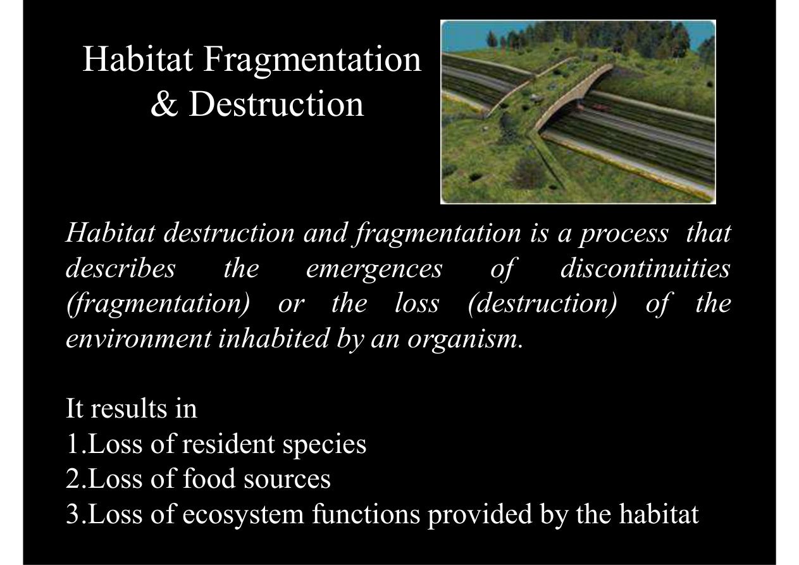
Habitat Fragmentation
- •Habitat Fragmentation & Destruction Habitat destruction and fragmentation is a process that describes
This slide presents essential concepts in Lecture 03: Habitat Fragmentation. Specifically, it examines Habitat Fragmentation & Destruction Habitat destruction and fragmentation is a process that describes. In the broader context of Aquatic and terrestrial environmental issues: cultural eutrophication, ocean dead zones, Gulf of Mexico oil spill (Deepwater Horizon), Niger delta pollution, thermal pollution (Chaohu Lake), acid rain, desertification, Kubuqi greening model, shifting cultivation (Jhum), landfill leachate, biomagnification vs bioaccumulation, and Antarctic ozone depletion., mastering this material is critical for analyzing ecological tradeoffs, regulatory frameworks, and exam questions on environmental system dynamics.
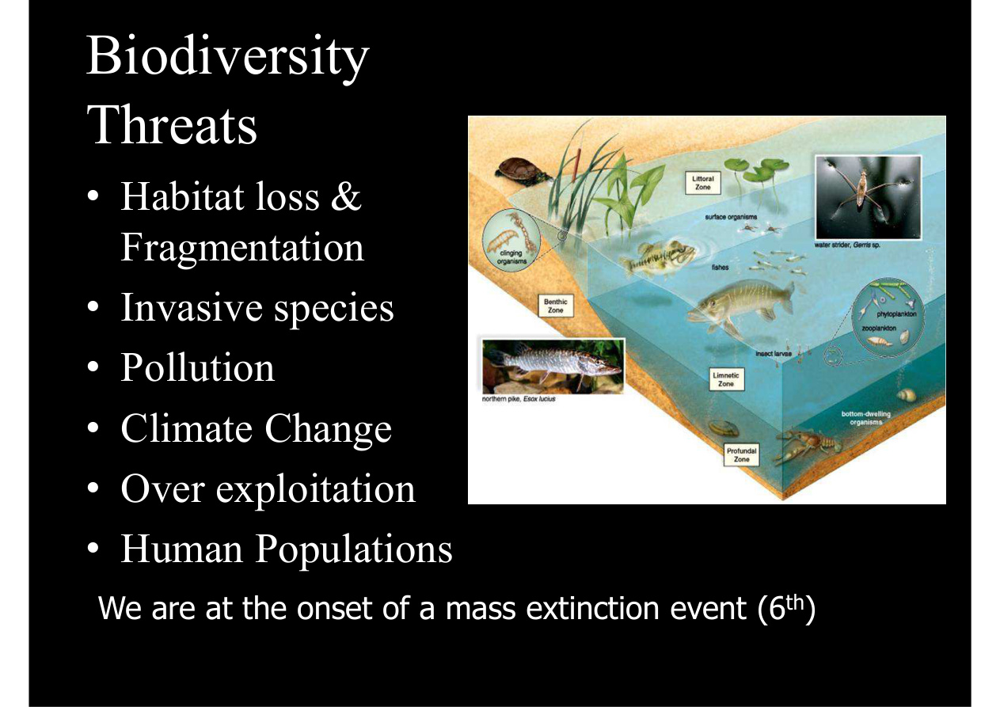
Biodiversity
- •Biodiversity Threats • Habitat loss & Fragmentation
This slide presents essential concepts in Lecture 03: Biodiversity. Specifically, it examines Biodiversity Threats • Habitat loss & Fragmentation. In the broader context of Aquatic and terrestrial environmental issues: cultural eutrophication, ocean dead zones, Gulf of Mexico oil spill (Deepwater Horizon), Niger delta pollution, thermal pollution (Chaohu Lake), acid rain, desertification, Kubuqi greening model, shifting cultivation (Jhum), landfill leachate, biomagnification vs bioaccumulation, and Antarctic ozone depletion., mastering this material is critical for analyzing ecological tradeoffs, regulatory frameworks, and exam questions on environmental system dynamics.
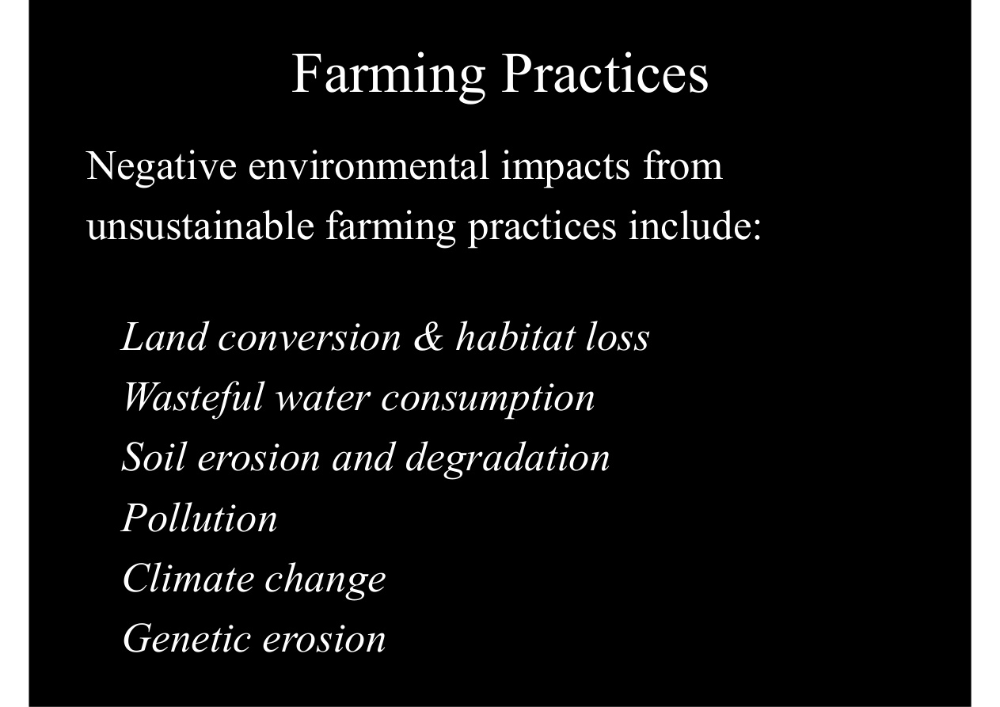
Farming Practices
- •Farming Practices Negative environmental impacts from unsustainable farming practices include: Land conversion & habitat loss
This slide presents essential concepts in Lecture 03: Farming Practices. Specifically, it examines Farming Practices Negative environmental impacts from unsustainable farming practices include: Land conversion & habitat loss. In the broader context of Aquatic and terrestrial environmental issues: cultural eutrophication, ocean dead zones, Gulf of Mexico oil spill (Deepwater Horizon), Niger delta pollution, thermal pollution (Chaohu Lake), acid rain, desertification, Kubuqi greening model, shifting cultivation (Jhum), landfill leachate, biomagnification vs bioaccumulation, and Antarctic ozone depletion., mastering this material is critical for analyzing ecological tradeoffs, regulatory frameworks, and exam questions on environmental system dynamics.
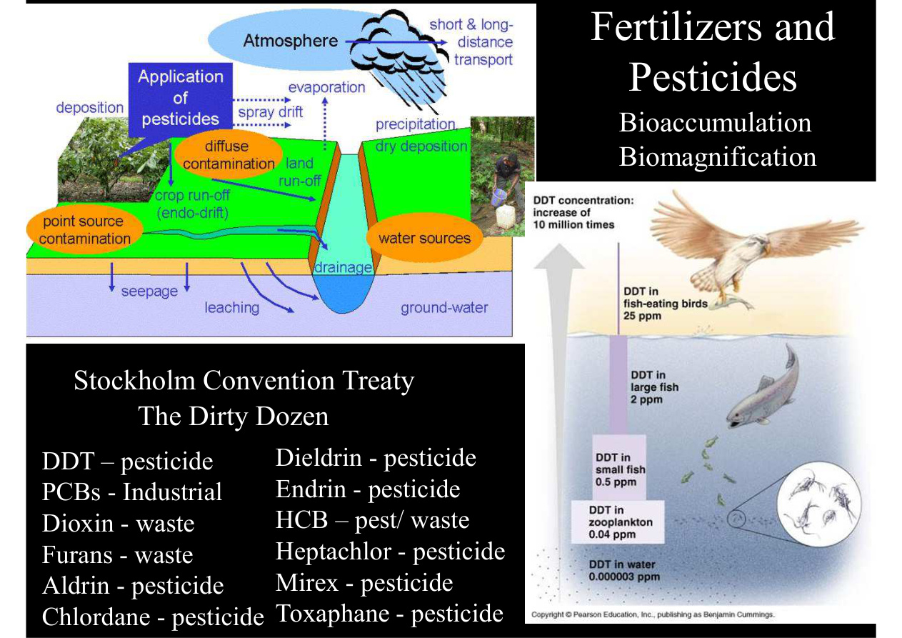
Fertilizers and
- •Fertilizers and Pesticides Bioaccumulation Biomagnification
This slide presents essential concepts in Lecture 03: Fertilizers and. Specifically, it examines Fertilizers and Pesticides Bioaccumulation Biomagnification. In the broader context of Aquatic and terrestrial environmental issues: cultural eutrophication, ocean dead zones, Gulf of Mexico oil spill (Deepwater Horizon), Niger delta pollution, thermal pollution (Chaohu Lake), acid rain, desertification, Kubuqi greening model, shifting cultivation (Jhum), landfill leachate, biomagnification vs bioaccumulation, and Antarctic ozone depletion., mastering this material is critical for analyzing ecological tradeoffs, regulatory frameworks, and exam questions on environmental system dynamics.
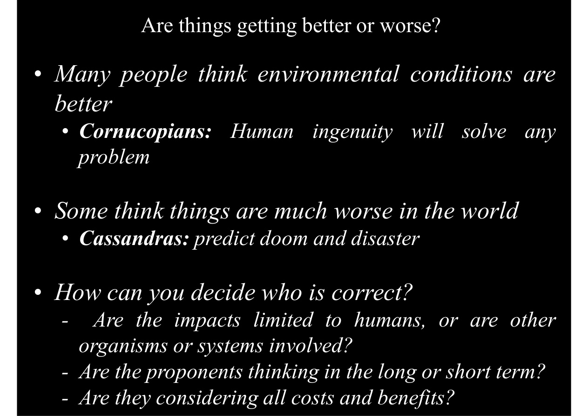
Are things getting better or worse?
- •Are things getting better or worse? • Many people think environmental conditions are better • Cornucopians:
This slide presents essential concepts in Lecture 03: Are things getting better or worse?. Specifically, it examines Are things getting better or worse? • Many people think environmental conditions are better • Cornucopians:. In the broader context of Aquatic and terrestrial environmental issues: cultural eutrophication, ocean dead zones, Gulf of Mexico oil spill (Deepwater Horizon), Niger delta pollution, thermal pollution (Chaohu Lake), acid rain, desertification, Kubuqi greening model, shifting cultivation (Jhum), landfill leachate, biomagnification vs bioaccumulation, and Antarctic ozone depletion., mastering this material is critical for analyzing ecological tradeoffs, regulatory frameworks, and exam questions on environmental system dynamics.
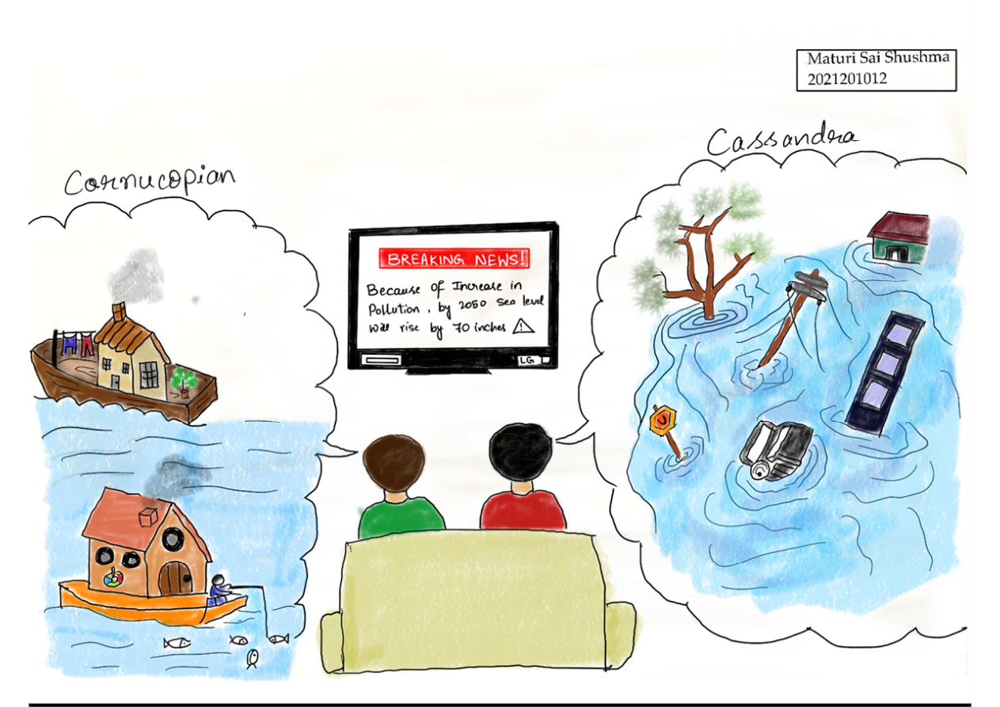
Slide 32
Visual figure / diagram presentation slide. Review the high-resolution render on the left.
This visual slide in Lecture 03 illustrates core structural mechanisms and empirical data for Slide 32. It provides essential visual context within the curriculum of Aquatic and terrestrial environmental issues: cultural eutrophication, ocean dead zones, Gulf of Mexico oil spill (Deepwater Horizon), Niger delta pollution, thermal pollution (Chaohu Lake), acid rain, desertification, Kubuqi greening model, shifting cultivation (Jhum), landfill leachate, biomagnification vs bioaccumulation, and Antarctic ozone depletion., directly connecting theoretical principles with real-world environmental technology observations.
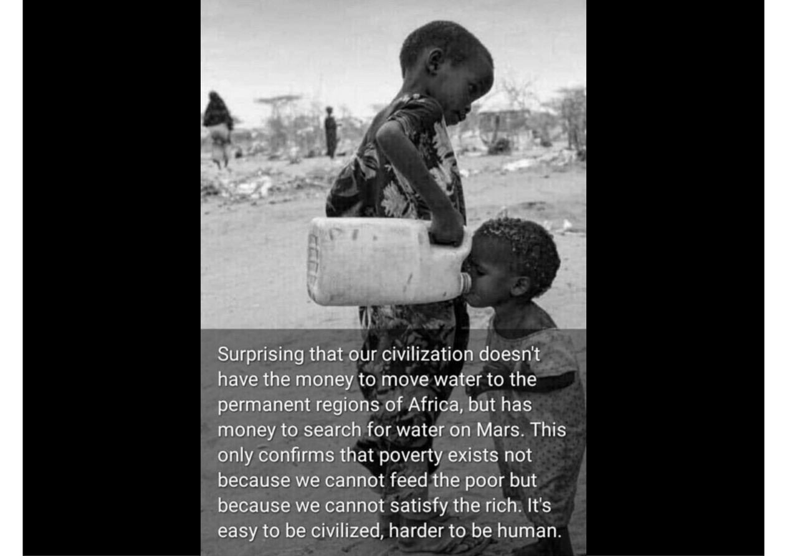
Slide 33
Visual figure / diagram presentation slide. Review the high-resolution render on the left.
This visual slide in Lecture 03 illustrates core structural mechanisms and empirical data for Slide 33. It provides essential visual context within the curriculum of Aquatic and terrestrial environmental issues: cultural eutrophication, ocean dead zones, Gulf of Mexico oil spill (Deepwater Horizon), Niger delta pollution, thermal pollution (Chaohu Lake), acid rain, desertification, Kubuqi greening model, shifting cultivation (Jhum), landfill leachate, biomagnification vs bioaccumulation, and Antarctic ozone depletion., directly connecting theoretical principles with real-world environmental technology observations.
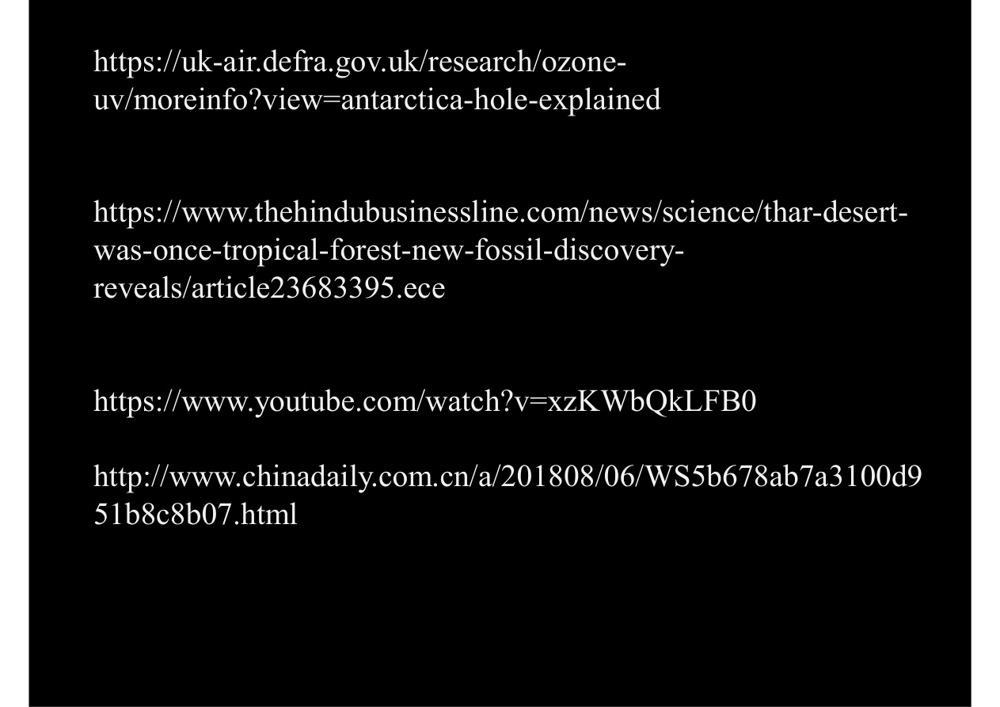
https://uk-air.defra.gov.uk/research/ozone-
Visual figure / diagram presentation slide. Review the high-resolution render on the left.
This slide presents essential concepts in Lecture 03: https://uk-air.defra.gov.uk/research/ozone-. Specifically, it examines https://uk-air.defra.gov.uk/research/ozone- uv/moreinfo?view=antarctica-hole-explained https://www.thehindubusinessline.. In the broader context of Aquatic and terrestrial environmental issues: cultural eutrophication, ocean dead zones, Gulf of Mexico oil spill (Deepwater Horizon), Niger delta pollution, thermal pollution (Chaohu Lake), acid rain, desertification, Kubuqi greening model, shifting cultivation (Jhum), landfill leachate, biomagnification vs bioaccumulation, and Antarctic ozone depletion., mastering this material is critical for analyzing ecological tradeoffs, regulatory frameworks, and exam questions on environmental system dynamics.
🏭 Air Quality Index (AQI) & Plume Dispersion Calculator
Compute CPCB / US-EPA sub-indices for PM₂.₅ and PM₁₀ with Gaussian industrial chimney plume dispersion.
Active Recall Flashcards
Test yourself on essential slide definitions, reactions, and principles before flipping.
Exam Traps, Fallacies & Professor Emphasis Points
Common student misconceptions and subtle distinctions tested in Midsem and Endsem exams.
- ⚠️ Trap: Assuming Ozone ($O_3$) is emitted directly from car tailpipes. Ground-level ozone is purely a secondary pollutant generated via sunlight-induced reactions between $NO_2$ and hydrocarbons.
- ⚠️ Exam Trap: In the Streeter-Phelps oxygen sag curve, the minimum dissolved oxygen concentration is NOT at the point of discharge ($t=0$). It occurs downstream at the critical time $t_c$ where the rate of deoxygenation equals the rate of reaeration.
Concept Check Quiz
Instant feedback on core conceptual and quantitative questions from the lecture slides.
Complete Slide Deck Quick-Jump Gallery
Quick visual reference of all 34 slides across this lecture deck with PDF downloads.